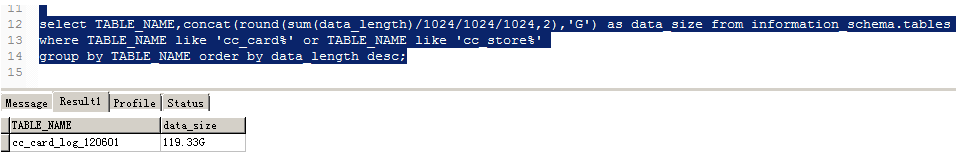
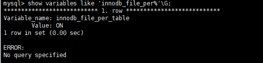
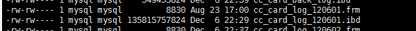
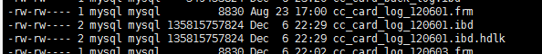
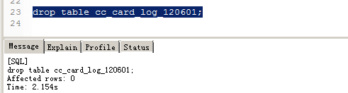

Mysql切换表和删除大表操作备忘
线上有一张日志表累计了太多数据，占用了服务器100多G的内存，需要把历史的数据清除掉，腾出空间。直接删除表的记录 Mysql 是不会自动归还硬盘空间的，需要对表进行 OPTIMIZE TABLE 优化操作归还空间，但此操作会长时间锁定表，不能在线上随便操作。
另一种方式就是新建一张新的表结构与日志表相同，把新的表表名互换，切到新表。之后就可以把占空间大的旧表删除，由于 drop 操作删除表会有锁影响数据库其他操作，而且如果是普通硬盘删除100多G数据也不会很快，会影响服务器IO操作。因此，删除大表一般使用网络上大多人推荐的建立硬链接来进行删除的方式。
切换表操作
建表 cc_card_log_1206 ，结构与表 cc_card_log 完全相同,把表 cc_card_log_1206 相互切换表名 cc_card_log，锁写操作，互换表名，解锁。
1 | LOCK TABLES cc_card_log WRITE, cc_card_log_1206 WRITE; |
删除大表
要删除的表已经很大

可以利用硬链接和 truncate 降低 drop table 对线上环境的影响
创建方法都很简单：
软链接（符号链接） ln -s source target
硬链接 （实体链接）ln source target
使用此办法前提条件，需要开启独立表空间，如果是共享表空间无法使用改方法。查询 show variables like 'innodb_file_per%'\G，结果值是 ON 表明开启了。

开启独立表空间表文件就都是单独的

建立硬链接 ln cc_card_log_1206.ibd cc_card_log_1206.ibd.hdlk ，
之后 cc_card_log_1206.ibd 的 INODES 属性变成了2，变成2之后 drop table 就不会直接把文件删除了，只是删除了链接，避免对数据库的影响，最后再把 cc_card_log_1206.ibd 删除掉就行了。

drop 删除表

物理上删除表，这里用 truncate 命令直接清空文件也可以，执行 truncate -s 0 cc_card_log_120601.ibd.hdlk